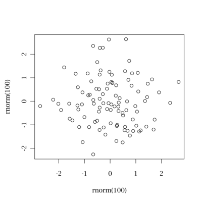

LaTeX Source Code Blocks in Org Mode
Table of Contents
Org Mode support for LaTeX Source Code Blocks
\LaTeX

Introduction
LaTeX is a document markup language and a document preparation system for the TeX typesetting program. The TeX program was developed by Donald Knuth at Stanford University to typeset complex mathematics. LaTeX is an extensible set of TeX macros designed to ease preparation of documents such as letters, articles, reports, and books. The current version is LaTeX2e. An ambitious update, LaTeX3, has been in the works for some time.
Org Mode is able to export LaTeX directly1. LaTeX code embedded in an Org Mode file (not within source code blocks) is exported correctly to a number of the export backends2.
LaTeX source code blocks can be used to tangle a LaTeX source file, or to create bitmap images or pdf snippets of arbitrary LaTeX code. Typically, this latter use involves mathematics, but it conceivably extends to any TeX output3. The LaTeX logo at the top of this page is a bitmap image generated from a simple LaTeX source code block. The complex example provided by , below, uses the TikZ package to create a graphics image.
Requirements and Setup
In order to use LaTeX source code blocks to their full capacity, a working LaTeX installation is required.4 LaTeX systems are distributed widely through various channels and one should be available for your computer system. A good place to find one is the TeX Users Group.
Once LaTeX is installed and is working correctly, you will need to
tell Emacs where to find the various LaTeX executable files. The
location of these files is likely distribution dependent: my MacTeX
distribution places them in the /usr/texbin subdirectory.
Accordingly, I have this in .emacs:
(setq exec-path (append exec-path '("/usr/texbin")))
Org Mode can generate Portable Network Graphics (png) bitmaps from
LaTeX source code blocks, which it does with the dvipng program that
comes with most LaTeX distributions. If you want to generate bitmaps
in other file formats, then you will need to install ImageMagick, a
software suite to create, edit, compose or convert bitmap images.
Ensure that the ImageMagick executables are installed somewhere on the
Emacs exec-path.
If you plan to edit LaTeX source code blocks separately, with C-c ’,
or want to control the size of pdf snippets, then it is highly
recommended that AucTeX be installed, as well. AucTeX is an
extensible package for writing and formatting TeX files. Assuming
that AucTeX is installed properly, the following line in .emacs will
ensure that AucTeX is loaded.
(load "auctex.el" nil t t)
Also highly recommended is RefTeX, a cross-reference, bibliography,
glossary, and index manager initially written by the creator of Org
Mode, Carsten Dominik. Add the following line to .emacs:
(add-hook 'LaTeX-mode-hook 'turn-on-reftex)
Finally, you’ll need to ensure that org-babel-load-languages includes
an entry for LaTeX. Typically, org-babel-load-languages will contain
many entries. The example below omits other languages.
(org-babel-do-load-languages 'org-babel-load-languages '((latex . t)))
Org Mode Features for LaTeX Source Code Blocks
Header Arguments
LaTeX source code blocks set default values for two standard header arguments. In addition, several LaTeX-specific header arguments are defined to control creation of bitmap images and pdf snippets.
LaTeX-specific Default Values
The LaTeX-specific default value of the :results header argument is
“latex”, which wraps the results in a #+BEGIN_LaTeX ... #+END_LaTeX
block.
The LaTeX-specific default value of the :exports header argument is
“results”.
LaTeX-specific Header Arguments
The standard :file header argument associated with a LaTeX source
code block by itself can take the name of either a Portable Network
Graphics (png) or a Portable Document Format (pdf) file. File names
for other bitmap file types can be supplied in conjunction with the
:imagemagick header argument, described below.
The :buffer header argument is a LaTeX-specific header argument that
takes the values yes or no. It is consulted when a bitmap image has
been requested using the :file header argument. If :buffer yes, the
default, then Org Mode consults the values of org-format-latex-options
and passes these to the dvipng program. If :buffer no, then Org Mode
takes background and foreground colors from the Emacs buffer.
Several LaTeX-specfic header arguments control production of pdf
snippets. The LaTeX-specific :headers header argument takes a Lisp
list that specifies entries for the LaTeX preamble, e.g.,
’(“\\usepackage{tikz}”). The :fit header argument invokes the LaTeX
preview package, which is developed and distributed along with AucTeX.
The :border header argument takes a LaTeX length, which should be
greater than 0.50001bp, or half a usual PostScript point. This can be
used to make pdf pages larger than they are by default. The header
arguments :pdfheight and :pdfwidth set the dimensions of the pdf page.
They can be passed a valid LaTeX length.
Andreas Leha added the ability to produce bitmaps in formats other
than png, using the LaTeX-specific :imagemagick header argument.
Quoting Andreas’ notice sent to the Org Mode list5.
LaTeX source blocks now have three new options:
:imagemagick- When not nil the source block is processed to pdf and the pdf is
converted with ImageMagick to whatever is given as
:file. Thus, the format is not limited to png. :iminoptions- This is passed to ImageMagick before the pdf file.
:imoutoptions- This is passed to ImageMagick before the output file.
Sessions
LaTeX does not support sessions.
Result Types
The default result type is latex, which wraps the results in a
#+BEGIN_LaTeX ... #+END_LaTeX block.
Other
LaTeX source code blocks are a special case because their functionality largely overlaps with the export facilities in Org Mode.
Examples of Use
“Hello World”
At its simplest, Org Mode evaluation of LaTeX source code blocks with
C-c C-c wraps the results in a #+BEGIN_LaTeX ... #+END_LaTeX block.
#+name: hello-world #+BEGIN_SRC latex \LaTeX #+END_SRC
#+RESULTS: hello-world #+BEGIN_LaTeX \LaTeX #+END_LaTeX
Andreas Leha
This complex example was posted to the Org Mode list by Andreas Leha. It depends on a working installation of the R statistical software.6 The code makes use of R sessions to preserve state between R source code blocks.
The first source code block loads the TikZ package, which defines a language to produce vector graphics from a geometric/algebraic description.
library("tikzDevice")
A simple plot is generated and output as LaTeX code by the TikZ device in R.
tikz(console=TRUE, width=4, height=4) plot(rnorm(100), rnorm(100)) dummy <- dev.off()
The LaTeX output of this R code is processed by a LaTeX source code
block, using Org Mode’s noweb syntax. Note the various #+header:
lines and their settings, which serve to configure ImageMagick. In
this case, a png file is being produced outside the usual Org Mode
path through dvipng. Note that the header presented here has been
simplified somewhat. Interested readers might want to review Andreas’
original post.
#+name: test_plot_png
#+header: :exports results :file test.png
#+header: :imagemagick yes :iminoptions -density 600 :imoutoptions -geometry 400
#+header: :fit yes :noweb yes :headers '("\\usepackage{tikz}")
#+begin_src latex :exports results :file test.png
<<test_plot()>>
#+end_src
With this header, the LaTeX output of the TikZ device in R yields a graph of the random number generation.

Figure 2: Results of evaluating a LaTeX source code block.
If the header is changed so the results are not written to a file, then the LaTeX code generated by the TikZ device is written to the Org Mode buffer. The results shown below have been shortened somewhat for illustrative purposes.
#+name: test_plot_tikz #+begin_src latex :noweb yes :exports results <<test_plot()>> #+end_src
#+BEGIN_LaTeX
% Created by tikzDevice version 0.6.2 on 2012-02-08 21:28:07
% !TEX encoding = UTF-8 Unicode
\begin{tikzpicture}[x=1pt,y=1pt]
\definecolor[named]{drawColor}{rgb}{0.00,0.00,0.00}
\definecolor[named]{fillColor}{rgb}{1.00,1.00,1.00}
\fill[color=fillColor,fill opacity=0.00,] (0,0) rectangle (289.08,289.08);
\begin{scope}
\path[clip] ( 49.20, 61.20) rectangle (263.88,239.88);
\definecolor[named]{drawColor}{rgb}{0.00,0.00,0.00}
\draw[color=drawColor,line cap=round,line join=round,fill opacity=0.00,] (184.34, 99.14) circle ( 2.25);
...
\draw[color=drawColor,line cap=round,line join=round,fill opacity=0.00,] (143.44,134.70) circle ( 2.25);
\end{scope}
\begin{scope}
\path[clip] ( 0.00, 0.00) rectangle (289.08,289.08);
\definecolor[named]{drawColor}{rgb}{0.00,0.00,0.00}
\draw[color=drawColor,line cap=round,line join=round,fill opacity=0.00,] ( 75.29, 61.20) -- (250.80, 61.20);
\draw[color=drawColor,line cap=round,line join=round,fill opacity=0.00,] ( 49.20, 61.20) --
: (263.88, 61.20) – : (263.88,239.88) – : ( 49.20,239.88) – : ( 49.20, 61.20);
\end{scope}
\begin{scope}
\path[clip] ( 0.00, 0.00) rectangle (289.08,289.08);
\definecolor[named]{drawColor}{rgb}{0.00,0.00,0.00}
\node[color=drawColor,anchor=base,inner sep=0pt, outer sep=0pt, scale= 1.00] at (156.54, 13.20) {rnorm(100)};
\node[rotate= 90.00,color=drawColor,anchor=base,inner sep=0pt, outer sep=0pt, scale= 1.00] at ( 13.20,150.54) {rnorm(100)};
\end{scope}
\end{tikzpicture}
#+END_LaTeX
Backend dependent execution – conditionally export tikz to SVG on HTML export
This example demonstrates the handling of a LaTeX code block differently depending on the export backend. If the following file is exported to HTML the tikz code block will be converted to an SVG images, while on export to pdf (through LaTeX) the tikz code will simply be inserted into the document verbatim.
#+LATEX_HEADER: \usepackage{tikz}
First execute the second code block, to define the convenience macro
and to set the required new variables in ob-latex.el. Then export to
HTML and to pdf to see the tree exported as an SVG image and as
embedded tikz respectively.
* Tikz test
Here's a tree, exported to both html and pdf.
#+header: :file (by-backend (html "tree.svg") (t 'nil))
#+header: :imagemagick
#+header: :results (by-backend (pdf "latex") (t "raw"))
#+begin_src latex
\usetikzlibrary{trees}
\begin{tikzpicture}
\node [circle, draw, fill=red!20] at (0,0) {1}
child { node [circle, draw, fill=blue!30] {2}
child { node [circle, draw, fill=green!30] {3} }
child { node [circle, draw, fill=yellow!30] {4} }};
\end{tikzpicture}
#+end_src
* COMMENT setup
#+begin_src emacs-lisp :results silent
(setq org-babel-latex-htlatex "htlatex")
(defmacro by-backend (&rest body)
`(case (if (boundp 'backend) (org-export-backend-name backend) nil) ,@body))
#+end_src
This allows for the automatic composition of beautiful scalable graphics across both HTML and pdf from a single document and image source.
Footnotes:
See LaTeX export instructions in the manual.
See http://www.tug.org/texshowcase/ for a showcase of TeX examples.
You can tangle a LaTeX file without a working LaTeX installation, but it won’t be possible to compile this file.